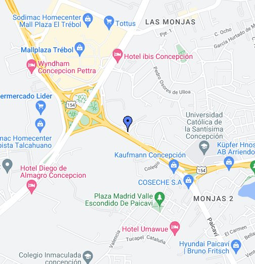

<ion-menu contentId="main-content">
  <ion-header>
    <ion-toolbar>
      <ion-title>Menú</ion-title>
    </ion-toolbar>
  </ion-header>
  <ion-content class="ion-padding">
  
    <ion-list>
    
      <ion-item routerLink="/perfil">Mi Perfil</ion-item>
      <ion-item routerLink="/tomar-viaje">Tomar Viaje</ion-item>
      <ion-item routerLink="/mis-viajes">Mis Viajes</ion-item>
      <ion-button (click)="signOut()">
        Cerrar sesion 
      </ion-button>
      
    </ion-list>
    
  </ion-content>
  <div class="map-background">
    
  </div>
  
</ion-menu>


<div class="ion-page" id="main-content">
  <ion-header>
    <ion-toolbar>
      <ion-buttons slot="start">
        <ion-menu-button></ion-menu-button>
      </ion-buttons>
      <ion-title>Bienvenido</ion-title>
      <ion-buttons slot="end" class="ion-align-self-end">
      </ion-buttons>
    </ion-toolbar>
  </ion-header>

  <ion-content class="ion-padding">
    

    
  </ion-content>
</div>